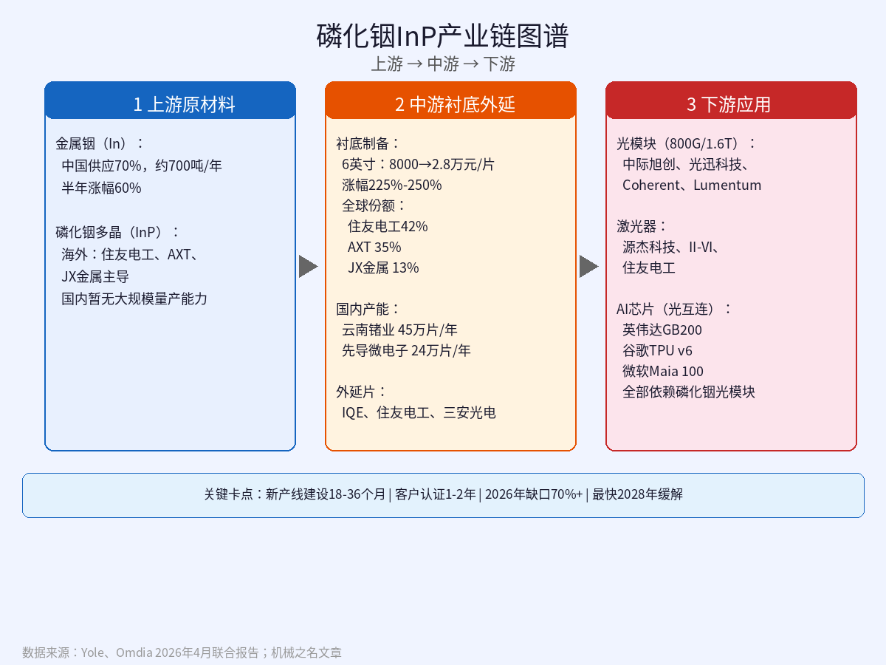
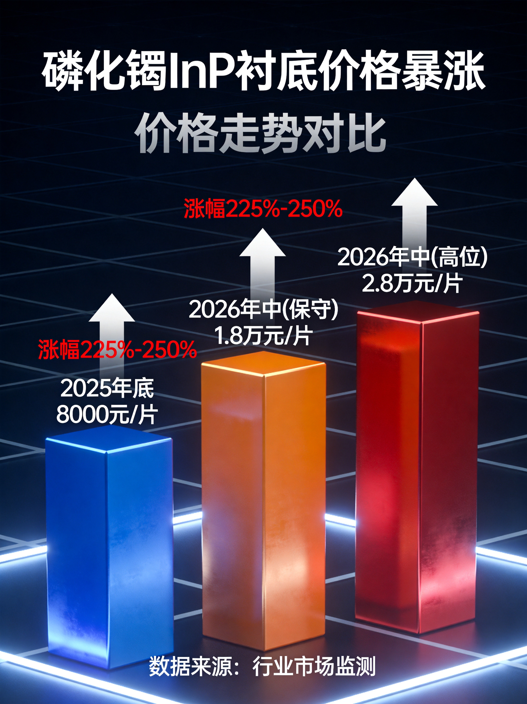
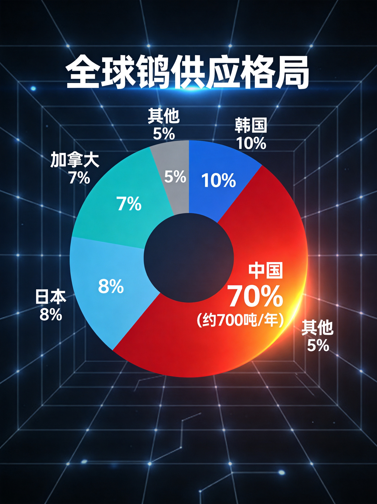

小K | 2026年7月9日
磷化铟 铟 InP 光模块 AI算力 供应链
全球AI算力最大的瓶颈可能不是芯片，而是一种你听都没听过的金属——铟。全球每年产量不到1100吨，中国占了70%，AI正在把它吃光。
• 一句话：全球AI算力最大的瓶颈可能不是芯片，而是一种你听都没听过的金属——铟。全球每年产量不到1100吨，中国占了70%，AI正在把它吃光。
先说一个反直觉的事实：AI数据中心吃金属，可能比吃电还凶。
每颗AI芯片都需要光模块来互连，而光模块的核心材料叫磷化铟（InP）——一种由铟（In）和磷（P）组成的化合物半导体。没有磷化铟，就没有800G/1.6T高速光模块；没有高速光模块，英伟达GB200 NVL72、谷歌TPU v6、微软Maia 100——这些AI芯片全是废铁。
但铟是什么？大多数人没听过。
铟是元素周期表第49号元素，银白色软金属，全球年产量不到1100吨——什么概念？全球钢产量19亿吨，铟只有它的一百七十万分之一。而且铟有一个致命的特性：它100%是锌冶炼的副产品，不存在独立铟矿，不能单独开采。锌价低迷→冶炼厂减产→铟供给同步收缩。你想增产铟？先问锌矿答不答应。
这就是所谓的"副产品悖论"——供给弹性几乎为零。

2026年铟价的走势，用"疯狂"两个字形容不过分：
| 时间 | 精铟价格（元/kg） | 变化 |
|---|---|---|
| 2025年底 | ~2960 | 起点 |
| 2026年1月 | 4200 | +42% |
| 2026年3月 | 4950 | 十年新高 |
| 2026年6月30日 | 5300 | 半年+77.9% |

6英寸磷化铟衬底更夸张：从2025年底的8000元/片涨到2026年中的1.8万-2.8万元/片，涨幅225%-250%。上游金属铟半年涨了60%。
招商证券预测2026年铟价中枢在5500-6000元/kg，乐观情况可能突破7000-8000元/kg。
你可能会问：涨这么多了，是不是快到顶了？
这个问题问得好。要回答它，得先搞清楚一件事：这轮暴涨和上一轮有什么不同？
铟在历史上经历过两轮典型暴涨。2005年那一轮，是LCD面板产业爆发驱动的。当时铟价从~150元/kg飙到~1000元/kg（约$961/kg），然后呢？2008年跌到200元/kg，暴跌80%。
所以很多人本能地认为：涨多了就会跌，历史会重演。
但这一轮和2005年有三个本质区别：
第一，需求性质不同。 2005年是LCD面板——终端消费品，渗透率见顶后需求自然放缓。2026年是AI算力基础设施——800G→1.6T→3.2T，每一代光模块升级都非线性地增加铟消耗。1.6T光模块的InP衬底用量是800G的2.7-3倍，3.2T再翻3-5倍。这不是"渗透率见顶"的问题，是"代际倍增"的问题。
第二，供给格局不同。 2005年中国没有出口管制，供给可以随价格增加。2026年，中国2025年2月将磷化铟纳入出口管制，2026年6月金属铟出口审查进一步趋严，审批时间从"当天"延长到"数日"。全球70%的铟供应来自中国——这个出口管制是悬在海外买家头上的达摩克利斯之剑。

第三，硅光反而推升铟需求。 这是最反直觉的一点。很多人以为硅光技术会替代磷化铟——错。硅光方案在1.6T光模块中占比高达70-80%，但每套硅光模块必须外置磷化铟激光器光源。硅光渗透率越高，InP激光器需求越大。硅光不是InP的替代者，是InP的放大器。
一句话：2005年是"消费品周期"，涨完就跌；2026年是"基础设施结构性短缺"，涨完了还能涨。
来看供需数据（据Yole、Omdia 2026年4月联合报告）：
| 年份 | 全球InP衬底需求（万片） | 全球有效产能（万片） | 缺口率 |
|---|---|---|---|
| 2025 | 200-210 | 60-70 | ~69% |
| 2026 | 260-300 | 75-85 | ~70% |
| 2027E | 350-400 | 100-120 | ~65% |
| 2028E | 480+ | 150-200 | ~50% |
| 2030E | 700+ | 250-350 | ~40% |
Lumentum预测AI数据中心InP需求2025-2030年CAGR 85%。英伟达预测2026-2030年需求增长20倍。
2026年全球需求260-300万片，产能只有75-85万片——缺口超过70%。 也就是说，每10片需求只有7片能满足。
海外三巨头垄断了大部分产能：住友电工（42%份额）、AXT（35%）、JX金属（13%），订单排到了2027-2028年。
Coherent的高管飞到中国协商出口许可问题——这在两年前是不可想象的。
面对这个缺口，国内玩家正在疯狂扩产。但有一个关键事实：从投产到满产，需要12-18个月的良率爬坡。6英寸InP衬底良率从30%爬到85%需要1.5-2年。
云南锗业（002428）——国内InP衬底龙头：
先导微电子——全产业链一体化玩家：
有研新材（央企）：6英寸衬底完成客户送样验证，规划2027年量产
三安光电：侧重InP外延片，月产能600片6英寸，产品通过华为海思认证
关键判断：即使所有项目按期推进，大规模有效供货的最早时间窗口是2028年上半年。2026-2027年，缺口不会缩小，只会扩大。
一个更深层的问题：地球上的铟够用多久？
根据USGS和安泰科数据：
14-18年意味着什么？如果不考虑回收和技术进步，按当前开采速度，不到20年全球可经济开采的铟就会耗尽。
但有个好消息：再生铟正在崛起。2024年全球再生铟产量已达1033吨，首次超过原生铟760吨。如果再生铟占比提升到70-80%，理论上全球铟供应可支撑50年以上。
但问题是：再生铟的提纯难度极高，从废旧ITO靶材中回收的铟纯度通常只有4-5N，而AI光模块需要的InP衬底要求7N纯度（99.99999%）。从4N到7N，每一步都是指数级的技术难度。
粉丝问得最多的是：涨这么多了，能不能做空？
直说结论：当前阶段做空铟相关标的，风险收益比极差。
原因一：没有做空工具。 铟没有期货、没有期权、没有衍生品市场。铟现货市场流通盘仅数吨级，流动性极差，你连对手方都找不到。
原因二：股票端传导效率低。 铟概念股里，铟业务营收占比都极低：
原因三：供给端不可控。 中国出口管制持续收紧是做多资金的最大支撑。美国DLA还计划3年储备403吨铟（约全球半年产量）——这是需求增量。
可行的做空窗口在哪？ 等2028年产能释放信号明确后。具体来说，关注这几个信号：
在那之前，做空就是在赌命。
综合供需模型推算：铟价拐点大概率出现在2028年上半年到2029年上半年。
逻辑很简单：
但即使回调，铟价中枢不会回到2024年水平。出口管制 + AI刚需 + 资源稀缺的三重支撑，已经锚定了新的价格底部。
用情景分析来看：
| 情景 | 2027年底铟价 | 2027年底InP衬底价格 | 概率 |
|---|---|---|---|
| 乐观（管制升级+AI超预期） | 7000-8000元/kg | 6000-7000美元/片 | 25% |
| 基准（管制维持+需求正常） | 5500-6500元/kg | 5000-5500美元/片 | 50% |
| 悲观（管制放松+产能超预期） | 3500-4500元/kg | 3000-3500美元/片 | 25% |
最后回答一个隐含问题：有没有可能某种新技术取代磷化铟？
短期答案：没有。
| 替代路线 | 能替代什么 | 替代不了什么 | 状态 |
|---|---|---|---|
| 硅光（SiPh） | 调制器/波导/探测器 | 激光器（必须外置InP） | 1.6T占比70-80% |
| 薄膜铌酸锂（TFLN） | 超高速调制器 | 激光器（无源材料） | 2026年1.6T/3.2T开始商用 |
| 砷化镓（GaAs） | 短距低速（<100G） | 长距高速（波长不匹配） | 成熟但仅限VCSEL |
| 二维材料/直接带隙硅 | 理论上全部 | 效率极低（<1%） | 实验室阶段，5-10年 |
硅光和铌酸锂替代的是InP的"调制功能"，反而因为需要外置InP激光器而间接推升InP需求。
长期（5-10年）值得关注的方向：硅基III-V异质集成（在硅片上直接集成InP激光器，降低衬底面积需求）、量子点激光器（无需InP衬底，但效率与可靠性远不达标）。
如果你是投资者：
如果你是AI从业者：
如果你只是好奇：
参考来源：
本内容由 Coze AI 生成
← 返回首页